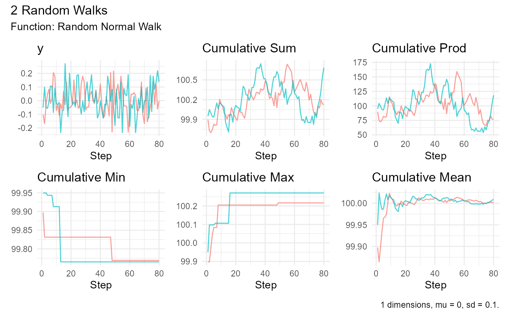

The random_normal_walk function is useful for simulating random processes
and can be applied in various fields such as finance, physics, and biology
to model different stochastic behaviors.
Usage
random_normal_walk(
.num_walks = 25,
.n = 100,
.mu = 0,
.sd = 0.1,
.initial_value = 0,
.samp = TRUE,
.replace = TRUE,
.sample_size = 0.8
)Arguments
- .num_walks
An integer specifying the number of random walks to generate. Default is 25.
- .n
An integer specifying the number of steps in each walk. Default is 100.
- .mu
A numeric value indicating the mean of the normal distribution. Default is 0.
- .sd
A numeric value indicating the standard deviation of the normal distribution. Default is 0.1.
- .initial_value
A numeric value indicating the initial value of the walks. Default is 0.
- .samp
A logical value indicating whether to sample the normal distribution values. Default is TRUE.
- .replace
A logical value indicating whether sampling is with replacement. Default is TRUE.
- .sample_size
A numeric value between 0 and 1 specifying the proportion of
.nto sample. Default is 0.8.
Value
A tibble containing the generated random walks with the following columns:
walk_number: Factor representing the walk number.x: Step index.y: Normal distribution values.cum_sum: Cumulative sum ofy.cum_prod: Cumulative product ofy.cum_min: Cumulative minimum ofy.cum_max: Cumulative maximum ofy.
The tibble includes attributes for the function parameters.
Details
This function generates multiple random walks, which are sequences of steps where each step is a random draw from a normal distribution. The user can specify the number of walks, the number of steps in each walk, and the parameters of the normal distribution (mean and standard deviation). The function also allows for sampling a proportion of the steps and optionally sampling with replacement.
The output tibble includes several computed columns for each walk, such as the cumulative sum, product, minimum, and maximum of the steps.
See also
Other Generator Functions:
brownian_motion(),
discrete_walk(),
geometric_brownian_motion(),
random_normal_drift_walk()
Examples
# Generate 10 random walks with 50 steps each
set.seed(123)
random_normal_walk(.num_walks = 10, .n = 50)
#> # A tibble: 400 × 8
#> walk_number x y cum_sum cum_prod cum_min cum_max cum_mean
#> <fct> <int> <dbl> <dbl> <dbl> <dbl> <dbl> <dbl>
#> 1 1 1 0.125 0.125 0 0.125 0.125 0.125
#> 2 1 2 0.172 0.297 0 0.125 0.172 0.148
#> 3 1 3 -0.127 0.170 0 -0.127 0.172 0.0568
#> 4 1 4 -0.0218 0.149 0 -0.127 0.172 0.0371
#> 5 1 5 -0.0218 0.127 0 -0.127 0.172 0.0254
#> 6 1 6 -0.0306 0.0962 0 -0.127 0.172 0.0160
#> 7 1 7 0.0426 0.139 0 -0.127 0.172 0.0198
#> 8 1 8 0.0498 0.189 0 -0.127 0.172 0.0236
#> 9 1 9 0.0878 0.276 0 -0.127 0.172 0.0307
#> 10 1 10 0.00705 0.283 0 -0.127 0.172 0.0283
#> # ℹ 390 more rows
# Generate random walks with different mean and standard deviation
set.seed(123)
random_normal_walk(.num_walks = 10, .n = 50, .samp = FALSE)
#> # A tibble: 500 × 8
#> walk_number x y cum_sum cum_prod cum_min cum_max cum_mean
#> <fct> <int> <dbl> <dbl> <dbl> <dbl> <dbl> <dbl>
#> 1 1 1 -0.0560 -0.0560 0 -0.0560 -0.0560 -0.0560
#> 2 1 2 -0.0230 -0.0791 0 -0.0560 -0.0230 -0.0395
#> 3 1 3 0.156 0.0768 0 -0.0560 0.156 0.0256
#> 4 1 4 0.00705 0.0839 0 -0.0560 0.156 0.0210
#> 5 1 5 0.0129 0.0968 0 -0.0560 0.156 0.0194
#> 6 1 6 0.172 0.268 0 -0.0560 0.172 0.0447
#> 7 1 7 0.0461 0.314 0 -0.0560 0.172 0.0449
#> 8 1 8 -0.127 0.188 0 -0.127 0.172 0.0235
#> 9 1 9 -0.0687 0.119 0 -0.127 0.172 0.0132
#> 10 1 10 -0.0446 0.0746 0 -0.127 0.172 0.00746
#> # ℹ 490 more rows
set.seed(123)
random_normal_walk(.num_walks = 2, .n = 100) |>
ggplot(aes(x = x, y = y, group = walk_number, color = walk_number)) +
geom_line() +
labs(title = "Random Normal Walk", x = "Time", y = "Value") +
theme_minimal() +
theme(legend.position = "none")
